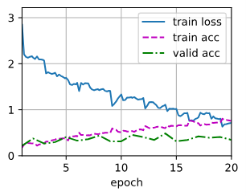

1. 基于ResNet18的场景分类模型 2. 基于ORB算法的特征点检测 3. 基于mediapipe的人脸检测 4. 基于faster-whisper的语音识别 5. 基于pyttsx3的语音合成 6. spark-image、spark-chat多种大模型调用
本项目使用ResNet-18神经网络模型在Place365数据集上进行训练，实现了场景分类的功能。同时，我使用Gradio库将模型封装成一个可视化的应用。
我使用的数据集是Place365，这是一个大规模的场景分类数据集，包含了365种不同的场景类别，可以用于训练和评估场景分类模型。
我选择了ResNet-18作为我们的神经网络模型。ResNet-18是一种深度残差网络，它通过引入残差连接来解决深度神经网络中的梯度消失和表示瓶颈问题。ResNet-18包含18层（不包括输入层和输出层），其中有5个卷积块，每个块包含一个或两个卷积层。训练过程数据如下： 
我使用Gradio库将模型封装成一个可视化的应用。Gradio是一个用于创建可交互的机器学习模型演示的库，它可以快速地生成一个用户界面，让用户可以直观地看到模型的输入和输出。
要运行这个应用，你需要安装以下的Python库：
torch
torchvision
gradio
PIL
然后，你可以运行app.py来启动应用。
python app.py应用启动后，你可以在浏览器中打开显示的URL，然后上传一张图片，应用会显示出模型对这张图片的预测结果。
以上就是我的场景分类神经网络项目的技术文档，希望对你有所帮助。如果你有任何问题，欢迎随时向我提问。
1. FAST关键点检测：首先使用FAST算法检测图像中的关键点。FAST算法通过比较像素点与其邻域像素点的灰度差异来判断是否为关键点，并且通过选取适当阈值进行快速的检测。
2. 方向分配：对检测到的关键点进行方向赋值，使其具有旋转不变性。可以利用图像的梯度信息或者其他方式来确定关键点的主方向，从而实现对关键点的旋转不变性。
3. BRIEF特征描述子：使用BRIEF算法对每个关键点周围的像素点进行描述，生成二进制特征描述子。BRIEF算法通过比较像素点对之间的灰度值来生成二进制描述子，它不仅计算速度快，而且具有一定的鲁棒性。
4. 特征匹配：通过比较关键点的BRIEF描述子来进行特征匹配，从而找到图像中的相似区域。可以使用一些匹配算法（如汉明距离、最近邻匹配等）来进行特征匹配。
5. 鲁棒性增强：为了提高ORB算法的鲁棒性，可以对关键点进行一些鲁棒性增强的操作，如采用多尺度检测、动态阈值设置等，从而提高匹配的准确性和稳定性。
总的来说，ORB特征检测算法结合了FAST的高速和BRIEF的稳定性，具有较好的性能和鲁棒性，适用于图像特征检测和匹配等应用场景。
图像查重：
Windows端产品存贮第一张视频帧，之后0.5秒获取一次，每一帧计算特征点后与第一张做对比，存储最佳匹配的前30个特征点，并计算汉明距离。当汉明距离小于0.5的特征点占比超过30%，则认为图像重复，这很好地解决了大模型多图片处理困难的问题。
由于ORB算法的旋转不变性及BRIEF描述子机制，其很好满足了视频帧查重处理对速度和旋转适应性的要求。
全景图拼接：
ORB算法匹配前后图像的特征点，尤其侧重对边缘特征点相似度的检测，之后利用利用一些几何变换模型来估计图像间的变换关系，并进行拼接。
由于ORB算法对旋转的敏感性，拼接后的图像具有较好的边缘衔接，但整体因旋转而不够平整，无法很好应对大模型任务，遂弃用，另择方案。
1. request参数
xxxxxxxxxxdef gen_params(appid_, question): """ 通过appid和用户的提问来生成请求参数 """ data = { "header": { "app_id": appid_, # "uid": "12345" }, "parameter": { "chat": { "domain": domain, "temperature": 0.5, "top_k": 4, "max_tokens": 2048, "auditing": "default" } }, "payload": { "message": { "text": question } } } return data2. 调用方式：
对获取到的每一帧图像调用spark-image大模型
设置较低temperature以获得精确而简短的回答
使用进程Value机制避免高频请求
prompt："请你用客观、真实、简洁的语言概括这幅图片所包含的信息。"
整合spark-image的回答后调用spark-chat
prompt：f"我当前身处的场景是{curr_scene}。\ 同时，我在我身处的环境中拍了几张图片，这几张图片可能有重复和矛盾的部分，请筛查并提取真实简练的图片信息。\ 请你根据我提供的场景信息和提取后的图片信息用客观真实的语言描述一下我当前所处的环境，100个字左右。\ 你说的话里不能包含英文。\ 请你仅仅描述我当前所处的环境，不要输出别的话。以下是这些图片的信息。"
异步调用与状态检测
使用多线程令大模型调用与语音播报同时执行，实现实时播报
多线程间使用全局变量共享信息，多进程间使用Value指针共享内存
使用进程锁Lock避免内存访问异常及意外修改
1. fast-whisper语音识别：
faster-whisper简介：Faster-whisper是对基于Transformer网络的whisper语音识别模型进行了改进和优化的版本。它在whisper语音识别的基础上，通过增加更多的层和参数，提高了准确性和速度。因此，faster-whisper可以看作是whisper语音识别的升级版，具有更好的性能和效果。
视界之声中使用了HuggingFace开源的faster-whisper模型的tiny离线版本，其可选的prompt参数增强了它对短语音的识别进度。
2. SpeechRecognition语音技术：
SpeechRecognition是google开源的语音技术包，提供了监听话语起始、去除环境噪声的功能。
视界之声启动时利用模型加载的时间进行了4秒的噪声适应，之后监听用户指令，将去除噪声后的音频传给faster-whisper模型进行识别，达到了可观的精度。
mediapipe简介：MediaPipe是一个开源的跨平台框架，由Google开发，用于实时数据流处理。它提供了一系列成熟的视觉处理工具和机器学习模型，可以用于从人脸检测、手部姿势识别，到身体姿势估计等多种视觉任务。
任务适用性：传统级联分类器虽然可以实现较快的人脸检测，但在光线变化及人面部转动时表现较差；MTCNN虽然具有较高精度，但速度较慢，在实时处理任务下可能导致线程瘫痪。因此我们选择了兼具速度和精度的mediapipe。